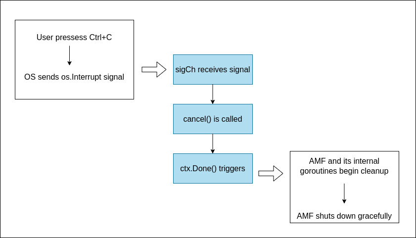

Go context in free5GC
Note
Author: Yung-Hsuan, Tsao
Date: 2025/05/21
Introduction
In the evolving landscape of 5G core networks, reliability, responsiveness, and clean resource management are critical. In free5GC, concurrency and lifecycle control are essential to ensuring system stability — especially when dealing with session handling, HTTP servers, and external service coordination. Go’s context.Context package plays a key role in managing this complexity.
What is go context?
Go's context.Context is a standard library feature that allows users to manage deadlines, cancellation signals, and request-scoped values across API boundaries and goroutines. It's designed to control the operations lifecycle — for example, stopping a database call, an HTTP request, or a background task when a timeout is reached or a parent operation is canceled.
At its core, a context provides:
- Cancellation propagation: Cancel a parent context, and all its children are canceled.
- Timeouts and deadlines: Automatically stop operations after a time limit.
- Scoped data: Carry request-specific data like IDs or tokens safely.
There are two ways to declare context.
context.Background(): returns a non-nilcontext, often used as the root context in the program — something that never cancels, has no deadline, and no values.context.TODO(): returns a non-nil, empty context, used as a placeholder when unsure what context to use or don’t have the correct context value yet.
After creating the parent category context, you can use it through the With functions to cope with various scenarios, such as:
- withCancel: Creates a new context that can be canceled manually. Useful when need to cancel operations explicitly, such as when a user disconnects, or a task finishes early.
func WithCancel(parent Context)(ctx Context, cancel CancelFunc)
// example
ctx, cancel := context.WithCancel(context.Background())
defer cancel()
- withTimeout: Creates a context that is automatically canceled after a given timeout duration.
func WithTimeout(parent Context, time time.Duration)(Context, CancelFunc)
// example
ctx, cancel := context.WithTimeout(context.Background(), 5*time.Second)
defer cancel()
- withDeadline: Like
WithTimeout, but sets a specific end time instead of a duration.
func WithDeadline(parent Context, deadline time.Time)(Context, CancelFunc)
// example
deadline := time.Now().Add(10 * time.Second)
ctx, cancel := context.WithDeadline(context.Background(), deadline)
defer cancel()
- WithValue: Returns a copy of the parent context with a key-value pair attached. Helpful in passing request-scoped metadata like user IDs, trace IDs, or auth tokens.
func WithValue(parent Context, key, val interface{}) Context
// example
ctx := context.WithValue(context.Background(), "userID", 1234)
userID := ctx.Value("userID")
Example: Cancelable Workers
Following is a simple go function.
package main
import (
"context"
"fmt"
"time"
)
func worker(ctx context.Context, id int, workTime time.Duration) {
start := time.Now()
select {
case <-time.After(workTime):
fmt.Printf("Worker %d: Finished work in %v\n", id, workTime)
case <-ctx.Done():
elapsed := time.Since(start)
fmt.Printf("Worker %d: Canceled after %v (%v)\n",
id, elapsed.Round(time.Millisecond), ctx.Err())
}
}
func main() {
ctx, cancel := context.WithCancel(context.Background())
defer cancel()
go worker(ctx, 1, 1*time.Second)
go worker(ctx, 2, 3*time.Second)
go worker(ctx, 3, 5*time.Second)
time.Sleep(2 * time.Second)
fmt.Println("Canceling all the workers...")
cancel()
time.Sleep(time.Second)
}
In this program, context.Background() is wrapped by context.WithCancel, which gives a new context(ctx) and a cancel() function.
Ctx.Done() is a channel that gets closed when cancel() is called.
These allow all workers to listen for cancellation using the same ctx.
go worker(ctx, 1, 1*time.Second)
go worker(ctx, 2, 3*time.Second)
go worker(ctx, 3, 5*time.Second)
In this part, three workers each receive a shared ctx, a unique ID, and a different work duration. Each worker simulates doing some task by waiting for the given time using time.After(workTime).
func worker(ctx context.Context, id int, workTime time.Duration) {
start := time.Now()
select {
case <-time.After(workTime):
fmt.Printf("Worker %d: Finished work in %v\n", id, workTime)
case <-ctx.Done():
elapsed := time.Since(start)
fmt.Printf("Worker %d: Canceled after %v (%v)\n",
id, elapsed.Round(time.Millisecond), ctx.Err())
}
}
Inside the worker function, each worker either:
- Work time to finish: prints a complete message
- Context to be canceled: prints cancel message and how long it worked
As shown below, workers 2 and 3's work was canceled as expected.
Worker 1: Finished work in 1s
Canceling all the workers...
Worker 3: Canceled after 2s (context canceled)
Worker 2: Canceled after 2s (context canceled)
Example: Multi-level Contexts
Go's contxt forms a tree-like hierarchy where a context can be derived from other contexts. This structure allows precise control over cancellation scope.
Here is a sample code for multiple level contexts. Consider the following context tree:
ctx (root)
|── ctx1 (WithCancel)
│ ├── ctx1a (WithTimeout)
│ └── ctx1b (WithValue)
└── ctx2 (WithDeadline)
package main
import (
"context"
"fmt"
"time"
)
func main() {
ctx, cancel := context.WithCancel(context.Background())
ctx1, cancel1 := context.WithCancel(ctx)
ctx1a, _ := context.WithTimeout(ctx1, 2*time.Second)
ctx1b := context.WithValue(ctx1, "key", "value")
ctx2, cancel2 := context.WithDeadline(ctx, time.Now().Add(5*time.Second))
// simulate cancellation
cancel()
select {
case <-ctx1a.Done():
fmt.Println("ctx1a canceled: ", ctx1a.Err())
case <-time.After( * time.Second):
fmt.Println("ctx1a still alive")
}
select {
case <-ctx1b.Done():
fmt.Println("ctx1b canceled: ", ctx1b.Err())
case <-time.After(3 * time.Second):
fmt.Println("ctx1b still alive")
}
select {
case <-ctx2.Done():
fmt.Println("ctx2 canceled: ", ctx1a.Err())
case <-time.After(3 * time.Second):
fmt.Println("ctx2 still alive")
}
}
-
Calling
cancel()onctxCalling
cancel()on the root context cancels all its child contexts, includingctx1,ctx1a,ctx1b, andctx2. This demonstrates that canceling a parent cancels all of its descendants.ctx1 canceled: context canceled ctx1a canceled: context canceled ctx1b canceled: context canceled ctx2 canceled: context canceled -
Calling
cancel()onctx1Calling
cancel()onctx1cancelsctx1and its children (ctx1a,ctx1b) but does not affect the rootctxor its siblingctx2. This shows that canceling a child context does not impact its parent or siblings.ctx1 canceled: context canceled ctx1a canceled: context canceled ctx1b canceled: context canceled ctx2 still alive -
Not calling any
cancel()functionIf no
cancel()function is called, contexts likectx1aandctx2will still get canceled automatically when their timeouts or deadlines are reached, while others remain unaffected.ctx1 still alive ctx1a canceled: context deadline exceeded ctx1b still alive ctx2 canceled: context deadline exceeded
Graceful Shutdown
A recent section highlights how context allows us to coordinate and control concurrent tasks, enabling some to finish naturally while others are safely stopped. This control becomes crucial during shutdown in real-world services—especially network functions like those in free5GC.
In any long-running service, graceful shutdown is essential for ensuring a clean and controlled termination of processes. A graceful shutdown means the application:
- Stops accepting new requests
- Waits for in-progress operations to finish before exits
- Releases resources
- Notifies other systems/services
Example: AMF Entry Point in free5GC
NFs in free5GC often need to manage user sessions(e.g., PDU sessions, UE context), maintain HTTP server connections, and interact with databases or external systems. If these are abruptly stopped(e.g., kill -9 or os.Exit()), it can lead to:
- Lost session state: UE sessions maintained in memory are instantly discarded without notifying other network functions, which results in the inconsistent state across the core network.
- Stuck network tunnels: UPF tunnels that were established by SMF or UPF may not be released properly, wasting system resources and potentially causing traffic routing issues.
- Unreleased timers or goroutines: Services like AMF maintain NAS and timers. If not stopped cleanly, timers and their associated goroutins continue running in the background or are killed mid-execution, possibly leaking resources or creating zombie behavior.
To support graceful shutdown in practice, free5GC components are designed to listen for OS signals and respond by cleaning up resources and terminating safely. This is typically handled using Go’s context package and signal handling patterns.
Take the action() function as an example, which is the main entry point for starting the AMF component in free5GC.
func action(cliCtx *cli.Context) error {
tlsKeyLogPath, err := initLogFile(cliCtx.StringSlice("log"))
if err != nil {
return err
}
logger.MainLog.Infoln("AMF version: ", version.GetVersion())
ctx, cancel := context.WithCancel(context.Background())
sigCh := make(chan os.Signal, 1)
signal.Notify(sigCh, os.Interrupt, syscall.SIGTERM)
go func() {
<-sigCh // Wait for interrupt signal to gracefully shutdown
cancel()// Notify each goroutine and wait them stopped
}()
cfg, err := factory.ReadConfig(cliCtx.String("config"))
if err != nil {
return err
}
factory.AmfConfig = cfg
amf, err := service.NewApp(ctx, cfg, tlsKeyLogPath)
if err != nil {
return err
}
AMF = amf
amf.Start()
return nil
}
In the function, a root context is created and will be passed down to the AMF application, enabling it to listen for cancellation signals.
Sets up a channel sigCh to listen for OS signals like os.Interrupt(Ctrl+C) or SIGTERM(standard termination signal).
The func() launches a goroutine that waits for the siganl. After receiving one, it calls cancel() to propagate the shutdown siganl to the context-aware componets.

Example: http.Server.Shutdown
Individual services within a network function—such as the SBI (Service-Based Interface) HTTP server—also need to terminate cleanly. Simply killing the server risks breaking ongoing API transactions with other network functions like SMF or NRF.
Go's standard library provides a dedicated method http.Server.Shutdown() to solve this. It allows network functions to terminate their servers without dropping API clients(e.g., other NF components) and helps maintain proper 5G core service coordination.
func (s *Server) Stop() {
const defaultShutdownTimeout time.Duration = 2 * time.Second
if s.httpServer != nil {
logger.SBILog.Infof("Stop SBI server (listen on %s)",
s.httpServer.Addr)
toCtx, cancel := context.WithTimeout(context.Background(),
defaultShutdownTimeout)
defer cancel()
if err := s.httpServer.Shutdown(toCtx); err != nil {
logger.SBILog.Errorf("Could not close SBI server: %#v", err)
}
}
}
A context with a 2-second timeout is created using context.WithTimeout. This context is later passed to Shutdown(), giving the server up to 2 seconds to complete any ongoing requests before forcibly closing. Without a timeout, a hanging request could block shutdown indefinitely.
This approach ensures that the server does not abruptly terminate active connections, which is especially important in a 5G core environment where network functions must coordinate smoothly. By using http.Server.Shutdown() with a timeout context, the system preserves service integrity, avoids resource leaks, and promotes reliable communication between components during shutdown.
Conclusion
Go context is not just a utility but a design pattern in concurrent programming. In free5GC, it helps enforce timeouts, propagate cancellations, and perform graceful shutdowns. These features are essential for building reliable telecom software, where timing and cleanup are non-negotiable.
Adding comprehensive context.Context usage is a step toward production readiness for any service — including a 5G Core component as critical as the AMF.
Reference
- 用 10 分鐘了解 Go 語言 context package 使用場景及介紹
- How to Terminate Go Programs Elegantly - A Guide to Graceful Shutdonws
- context package
About
Hi, I'm Yung-Hsuan! A newcomer to 5G and the free5GC community. Let me know without hesitation if there is any mistake in the article.
Connect with Me
- GitHub: https://github.com/reki9185